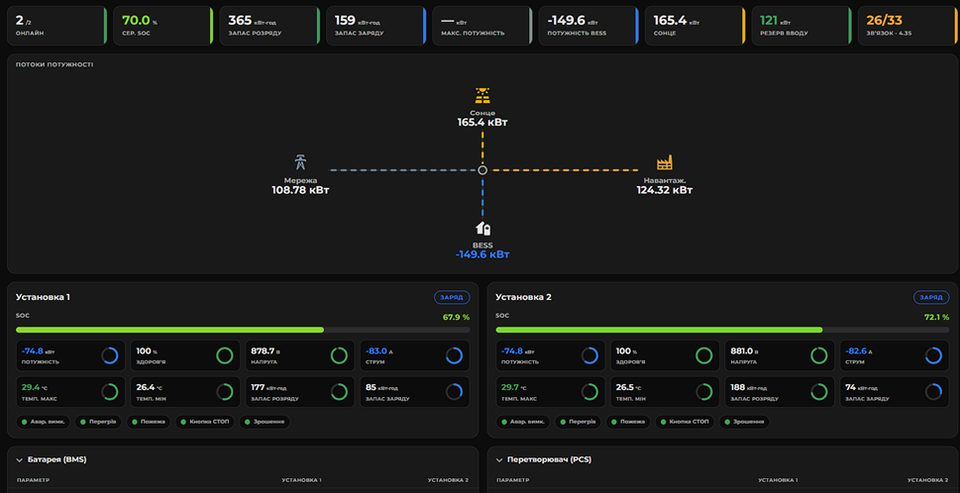

= 56.25rem) 24rem, 100vw" width="960" height="493" loading="lazy" alt="Інтерфейс EMS: потоки потужності між мережею, сонячною генерацією, накопичувачем і навантаженням">EMS-платформа для систем накопичення енергії
ALTEN Ltd · 2024–2026
Система енергоменеджменту для моніторингу й керування парком комерційних і промислових об'єктів з накопичувачами енергії, сонячною генерацією та резервними джерелами.
Детальніше
- Моніторинг у реальному часі: накопичувачі, інвертори, сонячна генерація, лічильники.
- Енергоарбітраж на ринку «на добу наперед» з автоматичним плануванням заряду й розряду.
- Режими ZeroExport та експорту за диспетчерським планом.
- Острівний режим: автоматичний перехід в автономну роботу й повернення на мережу.
- Централізоване керування розподіленим парком об'єктів з одного інтерфейсу.
Моя роль: єдиний розробник та інженер проєкту — від розробки до інтеграції обладнання й пусконалагодження на об'єктах.